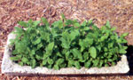

Crunch A Bunch Of Crosnes
February/March 2004
Tiny, twisted tubers show market potential.
By Doreen G. Howard
They're about the size of a chess piece, and they look like micromini Michelin men. Their French name, crosnes, is pronounced "crones," which brings an image of gnarly, old women to mind. Why should you care? Crosnes (Stachys affinis), also known as Chinese artichokes or chorogi, are a gourmet sensation at upscale restaurants and green grocers, and they're not to be missed by adventurous eaters and market gardeners alike. The crisp, juicy little tubers bring up to $40 a pound, retail, and enhance any salad, stir-fry or saute. Market potential abounds, as food magazines and television cooking shows tout the tuber's tasty trendiness. Plus, the little delights are easy to grow and fun to eat.
A perennial root vegetable and member of the mint family, crosnes can be planted in a flower bed, around a landscape shrub or as a field crop. Plants form a mat of attractive, spearmint-like leaves during the summer. When the foliage turns brown in autumn, the tiny tubers are harvested in the same manner as potatoes.
Cooking is optional with crosnes, as they are crunchy and full of juice right out of the ground. Wipe them clean or briefly soak them in water to remove any dirt. They are too tiny to peel, and much of their flavor is in the skin anyway.
Eat crosnes raw as a snack. Throw them in a salad for a radishlike crunch. Or pickle them for a real conversation piece. They shine in stir-fried dishes as a crispy alternative to water chestnuts. A piece of fish with crosnes and asparagus tips sauteed in garlic and olive oil makes for a fast, attractive gourmet entree, or serve them like the French-steamed and dressed with butter sauce.
Odessa Piper, chef-owner of an upscale Madison, Wisconsin, restaurant called L'Etoile, first sampled crosnes more than five years ago in Paris. "All the knots and ridges catch and hold sauces perfectly," she says. To put them on the menu of her own eatery, she turned to organic growers Richard de Wilde and Linda Halley, owners of Harmony Valley Farm in Viroqua, Wisconsin. De Wilde and Halley already were selling organic produce to Piper, who is a member of the Chefs Collaborative, a group that promotes local chef/organic grower relationships, so the market gardeners soon were turning out crosnes, too. The couple also sells organic produce to other area restaurants, at the Dane County, Wisconsin, Farmer's Market and through the Harmony Valley Farm CSA (Community Supported Agriculture) produce subscription program.
CULTURE
"You can plant the tubers in fall or early spring, in full sun and in any soil that drains reasonably well," says de Wilde. Once planted, the tubers need a steady supply of moisture until harvest to make a crop. "It is easy to detect when they start to produce," he says. "The plants grow very shallowly, so you can see the ground crack and heave when the tubers start to swell." Two to three weeks later, they're ready to eat, cook-or pickle, as Halley often does.
Spacing can make or break production, according to another crosnes fan, William Woys Weaver. He's been growing the little tubers for more than 20 years in the gardens surrounding his historic 1805 home, formerly the Lamb Tavern, in Devon, Pennsylvania. A food historian, seed collector and author of numerous books-including Heirloom Vegetable Gardening and, most recently, Country Scrapple, An American Tradition (Stackpole Books)-Weaver says to plant crosnes 3 inches deep and at least 12 inches apart for a harvest of big tubers. When the tubers are dug, he adds, it's impossible to find them all, but the ones that are missed will sprout the following spring; those volunteers should be thinned in the spring to 12 inches apart, too.
Cropping, or shearing the foliage back, also is important with crosnes, Weaver says, noting the plants should never be allowed to flower. When his crosnes' foliage reaches a foot in height, he shears it back to 6 inches or less. "Cropping directs growth into the roots, resulting in larger crosnes and at least five or six crosnes from each plant. The big ones go to market, and the little ones go back in the ground. The French are meticulous gardeners and crop regularly, knowing they will get premium tubers."
If conditions are perfect, each plant can produce up to a dozen big tubers, he adds, noting such conditions are warm days; cool nights; rich, sandy ground and plenty of water. "Crosnes grow in the wild on stream banks and near them," he says. "They are very sensitive to drought and will die from lack of water." Weaver lost his entire crop during the drought of 2002, but replanted a 16-by-16-foot bed last spring. The only pest problems he has encountered are moles and voles. "They will eat them," he says.
Purchased or pot-started plants can be set out in the spring to get a head start on tuber production. Several mail-order companies sell crosne plants as ornamentals for about $4 each; large-scale plantings of the tubers are more cost effective, but a single plant or two will supply enough tubers for tasting and future home-use (see source list, Page 79).
Store crosnes in plastic bags at a temperature of 35 to 40 degrees over the winter for spring planting, or plant them in the fall, before the ground freezes solidly, and the tubers will sprout the following spring. Don't forget to thin them.
HARVEST & CLEANING
Carol Deppe, a Corvallis, Oregon, plant breeder and author of Breed Your Own Vegetable Varieties: The Farmer's and Gardener's Guide to Plant Breeding and Seed Saving, grew crosnes in pure compost several years ago to help a local farmer develop new specialty crops. They planted a 4-by-20-foot bed in a field that had an 8-inch layer of compost spread on top of tilled soil, and got a generous harvest, although they didn't document the increase.
In terms of commercial viability, though, Deppe says, the real issue is the hand labor needed to harvest the tiny crosnes. Weaver, whose Pennsylvania ground doesn't freeze hard in winter, hand-harvests crosnes year-round from his garden bed. De Wilde harvests by hand, too, in season in Wisconsin, from his 500-foot field rows. "You turn over the plant with a spading fork and pick the little things by hand," he says. "Crosnes are not conducive to any mechanical means of harvest."
Anticipating handling commercial volumes in Oregon, Deppe experimented successfully with a harvest screen. She attached a piece of 1/2-inch galvanized mesh between two 8-foot-long bamboo poles to form an 8-by-3-foot frame for screening. "We propped up one end of the screen on a wheelbarrow and spaded the plants, compost and all, up onto the frame," she says. "With a little pushing around, the tubers were screened free of the compost and other debris, which fell back into the bed. Hand sorting is still necessary, but it's easier with most of the debris gone. In addition, you can raise the frame and work standing or sitting comfortably instead of crouching."
Cleaning dirt and other debris from lots of tiny, twisted tubers can be a bit of a challenge, too.
Adding sand to the growing medium helps, Deppe and Weaver say, and Weaver soaks his crosnes in a bucket of water, too. "Then I scrub each one with a veterinarian's horse toothbrush," he says. (A vegetable brush or toothbrush would work well, too, if you don't have a horse toothbrush handy.) De Wilde soaks his crosnes as well, and then dumps them on mesh trays to be scrubbed clean by high-pressure water jets.
Mother Earth News contributing editor Doreen Howard is a food and garden writer who lives near Chicago.
Crosnes
Tuber & Plant Sources
TUBERS
Harmony Valley Farm
S. 3442 Wire Hollow Road
Viroqua, WI 54665
(608) 483-2143 www.harmonyvalleyfarm.com Available after Nov. 15. $20 per half-pound, postpaid.
Marche aux Delices
P.O. Box 1164
New York, NY 10028
(888) 547-5471 www.auxdelices.com
Available October through March; $14 per pound, plus overnight shipping.
PLANTS
Companion Plants
7247 N. Coolville Ridge Road Athens, OH 45701
(740) 592-4643 www.companionplants.com
Tripple Brook Farm
37 Middle Road
Southampton, MA 01073
(413) 527-4626 www.tripplebrookfarm.com
Goodwin Creek
P.O. Box 83
Williams, OR 97544
(800) 846-7359 www.goodwincreekgardens.com

A potted planting of crosnes shows the spearmintlike foliage.
Crosnes, Pear & Hazelnut Salad
1 cup raw crosnes
3 cups water
2 cloves garlic, crushed
Juice of 1 lemon
4 cups assorted salad greens
2 ripe Anjou or Bosc pears, halved, cored and sliced into thin wedges
1/2 cup toasted hazelnuts, chopped coarsely
Dressing:
3 tablespoons hazelnut oil or a mild oil such as canola
5 tablespoons apple cider or pear vinegar, or a mild vinegar such as rice or champagne
Salt and pepper to taste
Clean crosnes and remove any brown tips. Bring water to boil in a large saucepan; add crosnes, garlic and lemon juice. Reduce heat and simmer for 2 minutes. Remove pan from heat and let crosnes sit in water for another 5 minutes. Drain and pat dry on paper towels. Prepare dressing by combining all ingredients and whisking until well-blended. Divide salad greens among 4 plates. Arrange sliced pears and crosnes on top. Sprinkle with chopped nuts. Drizzle with dressing and serve immediately.
Mother Earth News
|
A potted planting of crosnes shows the spearmintlike foliage. |
 |
|